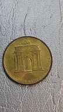
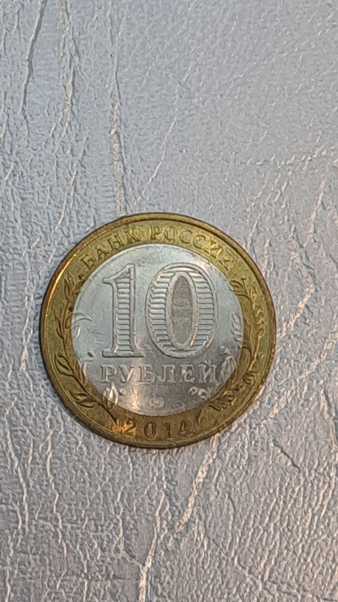
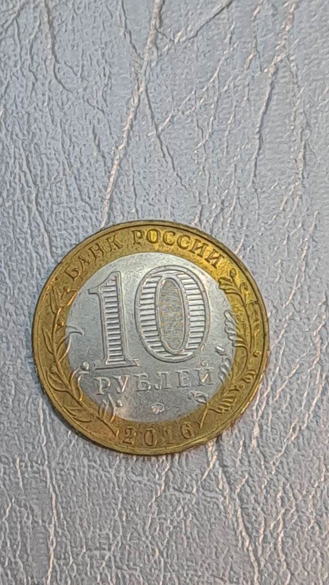

Дорогие любители монет, банкнот и других диковинных вещей. Мы рады вас приветствовать на нашем сайте посвященному коллекционированию. У нас вы сможете не только приобрести редкие коллекции диковинных монет, но и предложить свои уникальные редкие
экземпляры, которые хорошо будут оценены нашими экспертами.
Здесь также можно ознакомится с интересными статьями о монетах, узнать много нового и интересного из истории.
Узнать причины по которым стоимость монет завышена.
Наиболее дорогие десятирублёвые монеты современной России и причины их стоимости:
Нажмите на иконку для того чтобы участвовать в онлайн торгах через телеграмм бот
№ экземпляра:
Фото 1:
Фото 2:
Описание монеты:
1

Посвящена двухсотлетию победы в войне 1812 года против Наполеона.Аверс монеты представляет собой номинал 10 рублей и год изготовления - 2012. На реверсе изображена триумфальная арка, которая была построена вместо деревянной арки на
месте встречи русских войск одержавших победу. Лот 000001. Стартовая стоимость 60 рублей.
2
Монета изготовлена в честь 65 летия победы во второй мировой войне.На аверсе изображен номинал в десять рублей обрамленный дубовой и лавровой ветвями. На реверсе изображена эмблема празднования в виде пятиконечной звезды, образованной
орденской лентой. Лот 000002. Стартованя стоимость 60 рублей
3
Изготовлена в честь 50 летия с первого полёта в космос. На аверсе изображение номинала 10 рублей, в цифре ноль видны под разным углом изображения цифры 10 надписи "РУБ". На реверсе изображение ракеты справа и планеты слева, надпись 50 лет человека в космосе
расположена вдоль канта. Лот 000003. Стартовая стоимость 60 рублей.
4
Изготовлена 2 апреля 2012 года. На аверсе в центре диска — обозначение номинала монеты «10 РУБЛЕЙ». Внутри цифры «0» — скрытые, видимые поочередно при изменении угла зрения изображения цифры «10» и надписи «РУБ». По окружности вдоль
канта — надписи, вверху: «БАНК РОССИИ», внизу — дата: «2012», слева — стилизованное изображение оливковой ветви, справа — дубовой, под ней изображён знак монетного двора. На реверсе Герб города Воронежа, над ним, на ленте — надпись
полукругом: «ГОРОДА ВОИНСКОЙ СЛАВЫ», внизу, вдоль канта — надпись: «ВОРОНЕЖ». Лот 000004. Стартовая стоимость 60 руб.
5
Изготовлена 2 октября 2012 года.На аверсе в центре диска — обозначение номинала монеты «10 РУБЛЕЙ». Внутри цифры «0» — скрытые, видимые поочередно при изменении угла зрения изображения цифры «10» и надписи «РУБ». По окружности вдоль
канта — надписи, вверху: «БАНК РОССИИ», внизу — дата: «2012», слева — стилизованное изображение оливковой ветви, справа — дубовой, под ней изображён знак монетного двора. На аверсе герб города Великого Новгорода. Внизу вдоль канта
надпись "Великий Новгород". Лот 000005. Стартовая стоимость 60 рублей
6
Изготовлена 7 мая 2013 года.На аверсе в центре диска — обозначение номинала монеты «10 РУБЛЕЙ». Внутри цифры «0» — скрытые, видимые поочередно при изменении угла зрения изображения цифры «10» и надписи «РУБ». По окружности вдоль канта
— надписи, вверху: «БАНК РОССИИ», внизу — дата: «2013», слева — стилизованное изображение оливковой ветви, справа — дубовой, под ней изображён знак монетного двора. На реверсе герб города Кронштадта, над ним, на ленте — надпись
полукругом: «ГОРОДА ВОИНСКОЙ СЛАВЫ», внизу, вдоль канта — надпись: «КРОНШТАДТ». Лот 000006. Стартовая стоимость 60 рублей.
7
Монета отчеканена 4 июня 2018 года.На аверсе в кольце по окружности расположены надписи: в верхней части — «БАНК РОССИИ», в нижней части — «2018». Слева и справа на внешнем кольце расположены изображения ветви лавра и дуба соответственно,
элементы изображения которых переходят на диск. В центре диска расположены число «10» и надпись «РУБЛЕЙ» под ним, обозначающие номинал монеты. Внутри цифры «0» имеется защитный элемент в виде числа «10» и надписи «РУБ», наблюдаемых
под разными углами зрения к плоскости монеты. В нижней части диска расположен товарный знак монетного двора. На реверсе в диске расположена архитектурная панорама города, справа – герб города Гороховца, по окружности на кольце
– надписи, вверху: "ДРЕВНИЕ ГОРОДА РОССИИ", внизу: "ГОРОХОВЕЦ".Лот 000007. Стартовая стоимость 200 рублей.
8

Монета отчеканена 10 января 2014 года. На аверсе изображена надписи: в верхней части — «БАНК РОССИИ», в нижней части — «2014». Слева и справа на внешнем кольце расположены изображения ветви лавра и дуба соответственно, элементы изображения
которых переходят на диск. В центре диска расположены число «10» и надпись «РУБЛЕЙ» под ним, обозначающие номинал монеты. Внутри цифры «0» имеется защитный элемент в виде числа «10» и надписи «РУБ», наблюдаемых под разными углами
зрения к плоскости монеты. В нижней части диска расположен товарный знак монетного двора. На реверсе расположено изображение панорамы города Нерехта, вверху — изображение герба города Нерехта, на кольце по окружности имеются надписи:
в верхней части — «ДРЕВНИЕ ГОРОДА РОССИИ», в нижней части — «НЕРЕХТА». Лот 000008. Стартовая стоимость 200 рублей.
9

Монета отчеканена 11 июля 2016 года. На аверсе по окружности расположены надписи: в верхней части — «БАНК РОССИИ», в нижней части — «2016». Слева и справа на внешнем кольце расположены изображения ветви лавра и дуба соответственно,
элементы изображения которых переходят на диск. В центре диска расположены число «10» и надпись «РУБЛЕЙ» под ним, обозначающие номинал монеты. Внутри цифры «0» имеется защитный элемент в виде числа «10» и надписи «РУБ», наблюдаемых
под разными углами зрения к плоскости монеты. В нижней части диска расположен товарный знак монетного двора. На реверсе расположено изображение панорамы города Зубцов, вверху — изображение герба города, на кольце по окружности
имеются надписи: в верхней части — «ДРЕВНИЕ ГОРОДА РОССИИ», в нижней части — «ЗУБЦОВ». Лот 000010. Стартовая стоимость 200 рублей.
10
Монета отчеканена 11 июля 2016 года. На аверсе по окружности расположены надписи: в верхней части — «БАНК РОССИИ», в нижней части — «2016». Слева и справа на внешнем кольце расположены изображения ветви лавра и дуба соответственно,
элементы изображения которых переходят на диск. В центре диска расположены число «10» и надпись «РУБЛЕЙ» под ним, обозначающие номинал монеты. Внутри цифры «0» имеется защитный элемент в виде числа «10» и надписи «РУБ», наблюдаемых
под разными углами зрения к плоскости монеты. В нижней части диска расположен товарный знак монетного двора. На реверсе изображение панорамы города Ржева, вверху — изображение герба города Ржева, на кольце по окружности имеются
надписи: в верхней части — «ДРЕВНИЕ ГОРОДА РОССИИ», в нижней части — «РЖЕВ». Лот 000011. Стартовая стоимость 200 рублей.
11
Год выпуска монеты 2016. На аверсе расположено обозначение номинала монеты в две строки «5 РУБЛЕЙ», ниже – надпись «БАНК РОССИИ», под ней год чеканки «2016», слева и справа – стилизованная ветка растения, в правой части монеты — товарный
знак монетного двора. На реверсе расположено рельефное изображение скульптурной группы на Кладбище-мавзолее советских воинов в городе Варшаве, имеются надписи: вверху по окружности «ВАРШАВА» в обрамлении двух звездочек, внизу горизонтально
– «17 ЯНВАРЯ 1945 г.».Лот 000012. Стартовая стоимость 100 рублей.
12
Год выпуска монеты 2016. На аверсе обозначение номинала монеты в две строки «5 РУБЛЕЙ», ниже – надпись «БАНК РОССИИ», под ней дата — «2016», слева и справа — стилизованная ветка растения, в правой части монеты — товарный знак монетного
двора. На реверсе рельефное изображение памятника Минину и Пожарскому в г. Москве, имеются надписи: вверху по окружности — «ОСНОВАНО В 1866 г.», внизу в три строки – «РОССИЙСКОЕ ИСТОРИЧЕСКОЕ ОБЩЕСТВО». Лот 000013. Стартовая стоимость
монеты 80 рублей
13
Монета изготовлена в 2018 году. На аверсе изображен волчонок "Забивака" - символ чемпионата мира по футболу, надпись по окружности — «ЧЕМПИОНАТ МИРА ПО ФУТБОЛУ 2018 В РОССИИ». На реверсе Рельефное изображение Государственного герба
Российской Федерации, над ним надпись полукругом «РОССИЙСКАЯ ФЕДЕРАЦИЯ», имеются надписи в три строки: «БАНК РОССИИ», номинал монеты – «25 РУБЛЕЙ», и дата «2018 г.», справа – товарный знак Московского монетного двора. Лот 000014.
Стартовая стоимость 100 рублей.
14
Монета выпущена в 2010 году. На аверсе изображен номинал по окружности "one pound", а также номинал на арабском языке. Монета выполнена в биметаллическом сплаве в центре латунь, по краю медно0никелиевый сплав. На реверсе изображена
золотая маска Тутанхамона с орнаменом из цветов по окружности. Лот 000015. Стартовая стоимость монеты 100 рублей.
15
Монета выпущена в 2015 году. На аверсе в центре портрет Бернардо О'Хиггинса (1778-1842) (Тема Выдающиеся личности), генерала, диктатора Чили в 1817-1823 гг., руководителя освободительного движения; справа надпись в две строки на испанском
LIBERTADOR B. O'HIGGINS (Освободитель О'Хиггинс). Слева и справа от портрета надписи по кругу на испанском REPUBLICA DE CHILE (Республика Чили). На реверсе в центре в две строки на испанском номинал 10 PESOS (10 песо), обрамленный
лавровым венком. Лот 000016. Стартовая стоимость монеты 70 рублей.
16
Монета выпущена в 2014 году. На аверсе В верхней части монеты надпись на пиньине: ZHONGGUO RENMIN YINHANG (НАРОДНЫЙ БАНК КИТАЯ). На реверсе в центре монеты – цифра "1", слева номинал в две строки на пиньине: YI JIAO, справа – надпись
иероглифом. В нижней части монеты – год выпуска. В верхней части монеты надпись полукругом: НАРОДНЫЙ БАНК КИТАЯ. Лот 000017. Стартовая стоимость монеты 70 рублей.